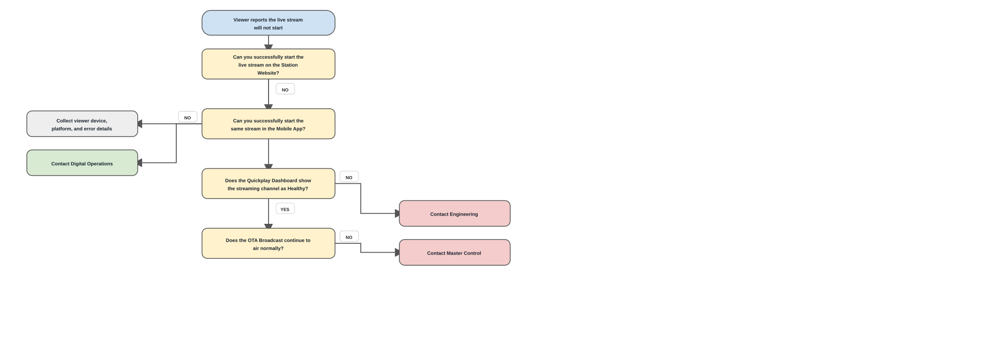
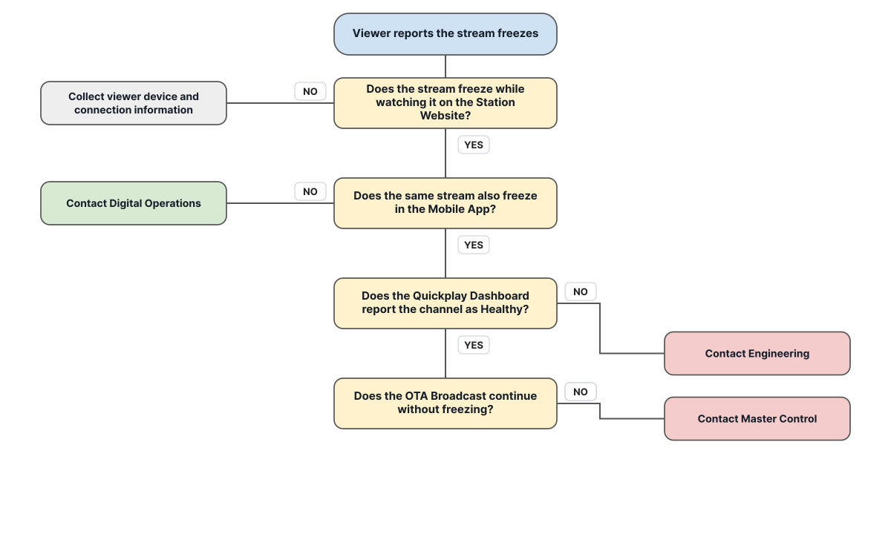
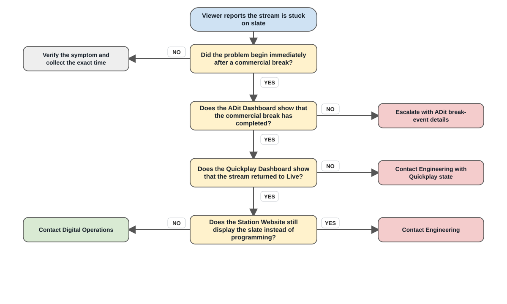
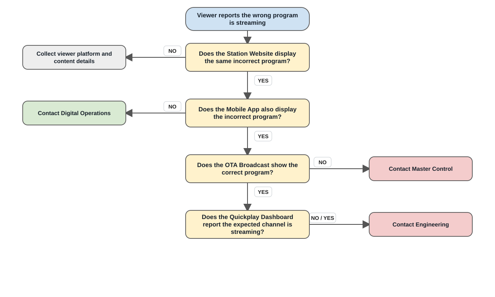
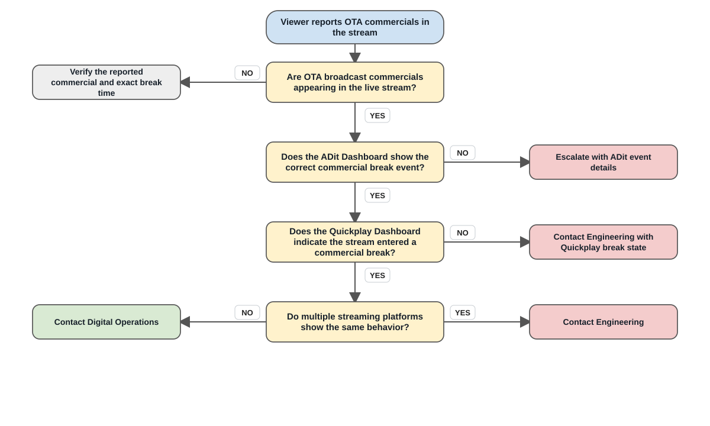
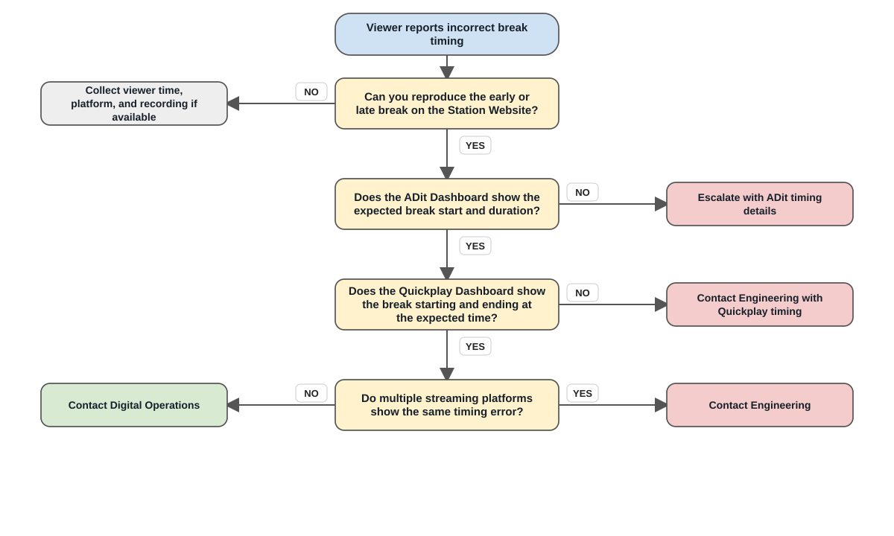
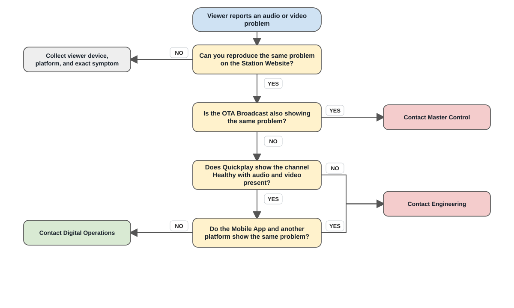
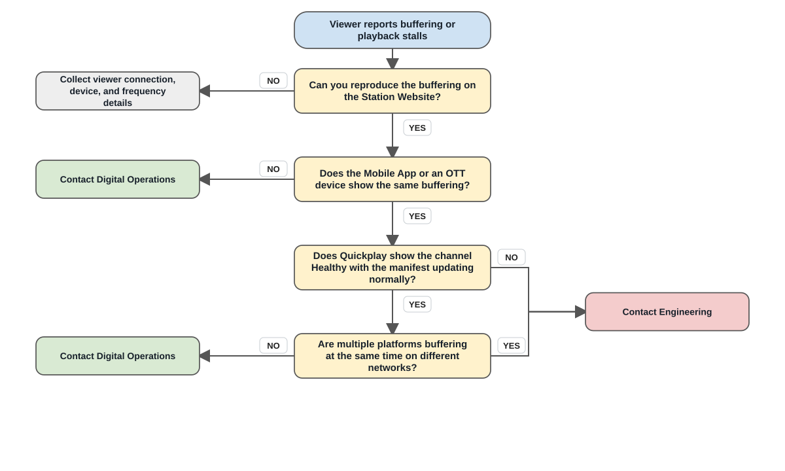

Digital Streaming Operations Runbook
Streaming Verification Guide
Use the symptom-driven runbooks to verify, isolate, document, and escalate live-streaming incidents.
Observe→Verify→Isolate→Escalate→Document
How to Use This Guide
1Observe
Identify the reported symptom and affected stream.
2Verify
Use the Station Website, Quickplay, ADit, mobile, and OTT tools.
3Isolate
Determine whether the issue is viewer, platform, broadcast, or system-wide.
4Escalate
Contact the correct team with dashboard evidence and exact times.
5Document
Capture screenshots, ticket numbers, actions, and final resolution.
Streaming System Overview
Master Control
→ADit
SCTE-104
→Harmonic X2S
SCTE-35 / Encoding
→Quickplay
Ingest / Packaging / Manifest
→Google Ad Manager
DAI
→CDN
→Viewer
When to use: Use this page when the live stream will not start, displays a black screen, or produces a playback error.
Symptoms
- Black screen
- Playback error
- Stream unavailable
Operator Tools
Quickplay DashboardADit DashboardStation WebsiteMobile AppOTT Device
Verify the Issue

Things That Are Helpful
- Time issue started
- Affected stream
- Website result
- Mobile/OTT result
- Screenshot
Engineering Investigation
- Harmonic X2S
- Quickplay ingest
- Manifest generation
- CDN delivery
When to use: Use this page when playback begins normally but the video or audio later stops advancing.
Symptoms
- Frozen video
- Frozen audio
- Playback timer stops
Operator Tools
Quickplay DashboardStation WebsiteMobile AppOTT Device
Verify the Issue

Things That Are Helpful
- Time issue started
- Affected stream
- Freeze duration
- Platform results
- Screenshot
Engineering Investigation
- Harmonic X2S
- Quickplay ingest
- Manifest refresh
- CDN delivery
When to use: Use this page when the stream remains on a slate instead of returning to programming after a commercial break.
Symptoms
- Slate remains after break
- Program does not return
- Audio may be silent
Operator Tools
ADit DashboardQuickplay DashboardStation WebsiteMobile AppOTT Device
Verify the Issue

Things That Are Helpful
- Exact break time
- Affected stream
- ADit event status
- Quickplay state
- Screenshot
Engineering Investigation
- ADit playlist and cue-out/cue-in
- Harmonic SCTE-35
- Quickplay break state
- GAM completion
When to use: Use this page when the streaming service shows content that does not match the expected program or OTA broadcast.
Symptoms
- Wrong newscast
- Wrong live event
- Different content than OTA
Operator Tools
Quickplay DashboardADit DashboardStation WebsiteMobile AppConfidence Monitor
Verify the Issue

Things That Are Helpful
- Expected program
- Actual program
- Time
- Affected stream
- Screenshot
Engineering Investigation
- Master Control routing
- Harmonic input mapping
- Quickplay channel mapping
- Manifest references
When to use: Use this page when OTA broadcast commercials appear in the digital stream instead of digitally inserted ads.
Symptoms
- OTA commercials online
- Digital ads missing
- Local TV spots streamed
Operator Tools
ADit DashboardQuickplay DashboardStation WebsiteMobile AppOTT Device
Verify the Issue

Things That Are Helpful
- Break start time
- Program
- ADit current event
- Quickplay break state
- Screenshot
Engineering Investigation
- ADit SCTE-104
- Harmonic SCTE-35
- Quickplay cue processing
- GAM response
When to use: Use this page when digital ad breaks start or end too early or too late compared with the OTA broadcast.
Symptoms
- Ads begin early or late
- Program returns early or late
- Beginning of program is missed
Operator Tools
ADit DashboardQuickplay DashboardStation WebsiteMobile AppConfidence Monitor
Verify the Issue

Things That Are Helpful
- Exact break time
- Scheduled duration
- Program
- ADit timing
- Screenshot or recording
Engineering Investigation
- ADit playlist timing
- SCTE-104 timing
- Harmonic SCTE-35
- Quickplay break processing
When to use: Use this page when the stream has missing audio, missing video, distortion, pixelation, or lip-sync problems.
Symptoms
- No audio or video
- Distorted audio/video
- Lip-sync problem
Operator Tools
Quickplay DashboardStation WebsiteMobile AppOTT DeviceConfidence Monitor
Verify the Issue

Things That Are Helpful
- Exact symptom
- Time
- Affected stream
- Platform comparison
- Screenshot/recording
Engineering Investigation
- Harmonic audio/video inputs
- Audio mapping and PIDs
- Quickplay ingest
- CDN/player delivery
When to use: Use this page when playback pauses, reloads, takes too long to start, or repeatedly stalls.
Symptoms
- Frequent buffering
- Playback pauses/restarts
- Long startup time
Operator Tools
Quickplay DashboardStation WebsiteMobile AppOTT DeviceNetwork Check
Verify the Issue

Things That Are Helpful
- Time/frequency
- Connection type
- Affected platforms
- Different-network comparison
- Screenshot
Engineering Investigation
- Harmonic output bitrate
- Quickplay packaging
- CDN latency
- Player telemetry
Engineering Quick Reference
Master Control / Broadcast Source
↓
ADit Dashboard
Playlist events and SCTE-104 cues
↓
Harmonic X2S
Encoding and SCTE-35 generation
↓
Quickplay Dashboard
Ingest, packaging, manifest, playback
↓
Google Ad Manager
Dynamic ad decisioning
↓
CDN
↓Website / Mobile / OTT Viewer
Recommended Check Order
- Confirm OTA source and routing.
- Verify Harmonic X2S input/output health.
- Check Quickplay ingest and manifest.
- For break issues, inspect ADit event timing.
- Check GAM after cue delivery is confirmed.
- Check CDN/player telemetry.
Evidence to Capture
- Exact incident time and affected stream
- ADit current event or break state
- Quickplay health and active alarms
- Harmonic alarms, input lock, output status
- Platform comparison and screenshot
Failure Isolation Matrix
| Symptom | Master Control | ADit | Harmonic X2S | Quickplay | GAM | CDN |
|---|
| Stream Down | | | Primary | Primary | Possible | Primary |
|---|
| Stream Frozen | | | Primary | Likely | | Likely |
|---|
| Stuck on Slate | | Likely | Primary | Primary | Likely | |
|---|
| Wrong Program | Primary | | Likely | Primary | | |
|---|
| Broadcast Commercials | | Primary | Primary | Primary | Primary | |
|---|
| Break Timing | Possible | Primary | Likely | Likely | Possible | |
|---|
| Audio / Video | Likely | | Primary | Likely | | Possible |
|---|
| Buffering | | | Possible | Likely | | Primary |
|---|
Escalation Matrix
| Condition | Primary Contact | Include | Priority |
|---|
| OTA is wrong, frozen, missing A/V, or off-air | Master Control | Time, program, channel, confidence monitor | P1 |
| Multiple streaming platforms show same outage | Engineering | Quickplay, platform results, screenshot | P1 |
| Single app or device only | Digital Operations | Device, app/platform, screenshot | P3 |
| Stuck on slate after break | Engineering | Break time, ADit event, Quickplay state | P1 |
| Broadcast commercials stream online | Engineering | Break time, ADit/Quickplay state | P1 |
| Break timing error | Engineering | Program, exact times, ADit timing | P2 |
Streaming Incident Worksheet